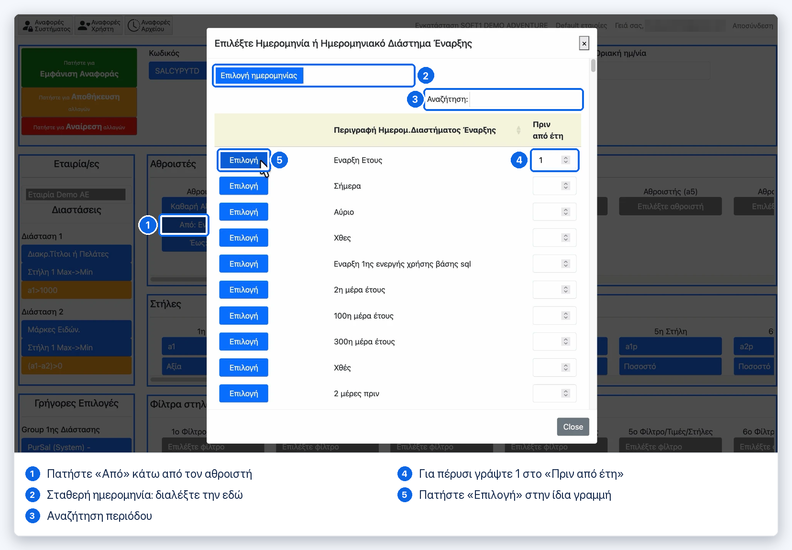
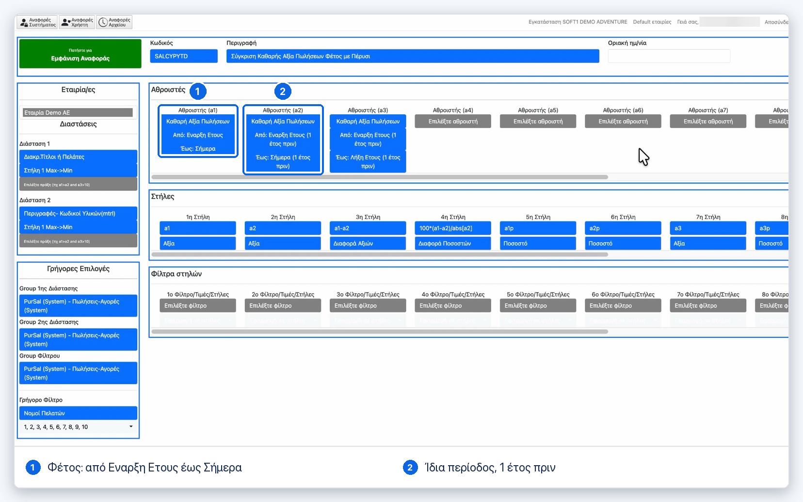

Περίοδοι και δυναμικά χρονικά διαστήματα
Κάθε αθροιστής έχει δικό του διάστημα «Από – Έως». Με τις δυναμικές περιόδους και το «Πριν από έτη» η αναφορά ενημερώνεται μόνη της κάθε μέρα και συγκρίνει αυτόματα με προηγούμενα χρόνια.
Τι κάνει#
Για κάθε αθροιστή ορίζετε πότε ξεκινά (Από) και πότε τελειώνει (Έως) το διάστημα. Έχετε τρεις τρόπους:
| Τρόπος | Τι κάνει | Παράδειγμα |
|---|---|---|
| Δυναμική περίοδος | Διαλέγετε από λίστα μια περίοδο που υπολογίζεται μόνη της σε σχέση με το «σήμερα» | «Εναρξη Ετους», «Σήμερα», «Λήξη Ετους» |
| Δυναμική περίοδος + Πριν από έτη | Η ίδια περίοδος, μετακινημένη προς τα πίσω. Γράφετε αριθμό: 1 = ένα έτος πριν, 5 = πέντε έτη πριν | «Εναρξη Ετους», 1 έτος πριν |
| Σταθερή ημερομηνία | Μια συγκεκριμένη ημερομηνία που δεν αλλάζει | 01/01/2026 |
Επειδή κάθε αθροιστής έχει τη δική του περίοδο, στην ίδια αναφορά βλέπετε φέτος, πέρυσι και πρόπερσι δίπλα δίπλα.
Πότε το χρησιμοποιώ#
«Πέρυσι σαν σήμερα»: θέλετε να ξέρετε πώς πάτε φέτος σε σχέση με το ίδιο σημείο πέρυσι, όχι με όλη την περσινή χρονιά. Βάζετε:
- a1: από «Εναρξη Ετους» έως «Σήμερα».
- a2: από «Εναρξη Ετους» έως «Σήμερα», με Πριν από έτη = 1 και στα δύο.
Αύριο η αναφορά θα δείχνει μόνη της μία μέρα παραπάνω και στα δύο έτη.
Βήματα#
- Στις ρυθμίσεις, κάτω από τον αθροιστή (π.χ. Αθροιστής (a2)), πατήστε Επιλέξτε από.
- Ανοίγει το Επιλέξτε Ημερομηνία ή Ημερομηνιακό Διάστημα Έναρξης.
- Για σταθερή ημερομηνία: διαλέξτε ημερομηνία στο πεδίο δίπλα στο κουμπί Επιλογή ημερομηνίας και μετά πατήστε το κουμπί.
-
Για δυναμική περίοδο: βρείτε τη γραμμή στη στήλη Περιγραφή Ημερομ.Διαστήματος Έναρξης. - Αν θέλετε προηγούμενο έτος, γράψτε πρώτα στη στήλη Πριν από έτη τον αριθμό των ετών (1, 2, …). - Πατήστε Επιλογή στην ίδια γραμμή.

Παράθυρο «Επιλέξτε Ημερομηνία ή Ημερομηνιακό Διάστημα Έναρξης» με τον αριθμό «1» στο «Πριν από έτη» της γραμμής «Εναρξη Ετους» -
Πατήστε Επιλέξτε έως και κάντε τα ίδια στο Επιλέξτε Ημερομηνία ή Ημερομηνιακό Διάστημα Λήξης.
-
Το κουμπί δείχνει πλέον, π.χ., «Από: … (1 έτος πριν)» και «Έως: … (1 έτος πριν)».

Κουμπιά Από/Έως μετά την επιλογή («Από: Εναρξη Ετους (1 έτος πριν)»)
Συμβουλές και συχνά λάθη#
- Βάλτε τα ίδια έτη και στο Από και στο Έως. Αν βάλετε «1 έτος πριν» μόνο στο Από, το διάστημα θα ξεκινά πέρυσι και θα τελειώνει φέτος.
- Οι ημερομηνίες πρέπει να είναι μετά το 01/01/2000. Αλλιώς θα δείτε το μήνυμα «Παρακαλώ εισάγετε έγκυρη ημερομηνία μεγαλύτερη από 01/01/2000».
- Η επικεφαλίδα της στήλης στα αποτελέσματα γράφει τις πραγματικές ημερομηνίες (Από / Έως). Έτσι ξέρετε πάντα τι διάστημα βλέπετε.
- Σταθερή ημερομηνία = δεν αλλάζει ποτέ. Για αναφορές που θέλετε να ενημερώνονται, προτιμήστε δυναμική περίοδο.
- Θέλετε όλη την αναφορά «σαν να ήταν» άλλη μέρα; Χρησιμοποιήστε την Οριακή ημ/νία.